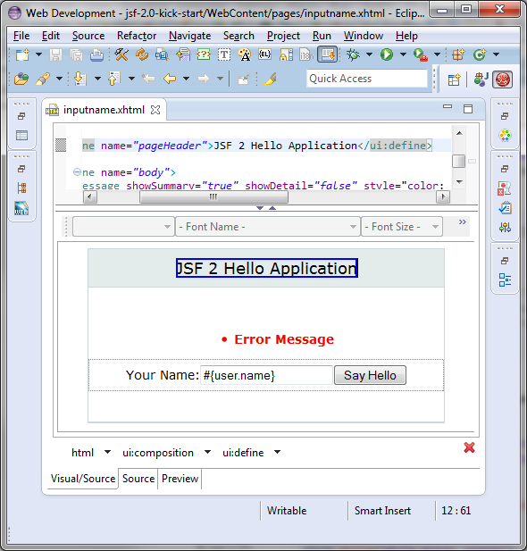

Windows 64-bit Support
Thanks to a contribution of Carsten Pfeiffer, Visual Page Editor got experimental support for Windows 64-bit. So if you see this screen:

then you may install XULRunner from this update site (via Help > Install New Software) and make it work:

Related JIRAs: JBIDE-2720, JBIDE-14451, JBIDE-14452.